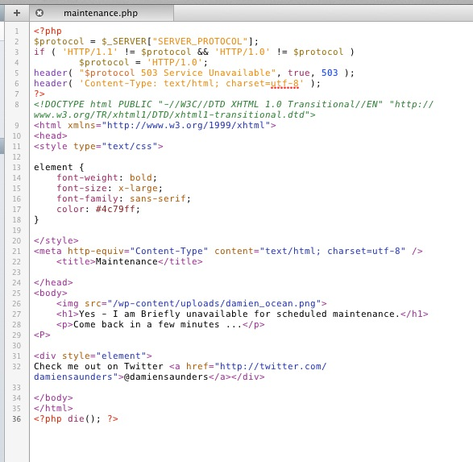

[WordPress] is a great tool. It has its own way of managing updates to your website - and will switch to maintenance mode automatically. Sometimes this is called an HTTP Status 503 Service Unavailable.
For the best user experience you can setup your own custom maintenance page - where you can show your brand, making it clear that this is planned maintenance and give your visitor some where else to go.

Get some control - enable WordPress Maintenance Mode the right way.
Earlier this year I wrote about enabling WordPress Maintenance mode and how you can customise this yourself.
Create your own Maintenance Page
As you can already tell - a maintenance page is just a PHP file with HTML. Start your favourite editor (I use Coda) and create a file called maintenance.php.
You need to have a bit of code at the top and the bottom of the page like this …
<?php
$protocol = $\_SERVER["SERVER\_PROTOCOL"];
if ( 'HTTP/1.1' != $protocol && 'HTTP/1.0' != $protocol )
$protocol = 'HTTP/1.0';
header( "$protocol 503 Service Unavailable", true, 503 );
header( 'Content-Type: text/html; charset=utf-8' );
?>
<!DOCTYPE html PUBLIC "-//W3C//DTD XHTML 1.0 Transitional//EN" "http://www.w3.org/TR/xhtml1/DTD/xhtml1-transitional.dtd">
<html xmlns="http://www.w3.org/1999/xhtml">
<head>
So this top part does all the smart work for your server and WordPress to generate an Error 503 page.
After that … you can then add some HTML …
<title>503 Service Temporarily Unavailable</title>
<?php die(); ?>
At the end of the document after you close the HTML make sure you have added
<?php die(); ?>
Now save your maintenance.php file and upload it to the wp-content directory.
Top tips for Maintenance Pages
- Embed your CSS styles in the HTML
- Link to your social networks (Give visitors a destination)
- Link to your mail list subscribe form (Promote deeper engagement)
- Make your 503 Http status page visual
If you’d like some help to set this up in WordPress, please consider hiring me and I can add this to your site.